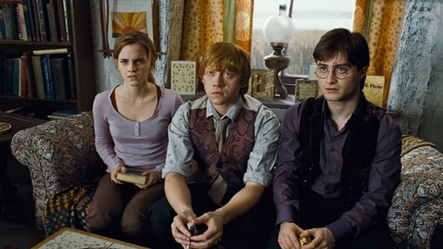
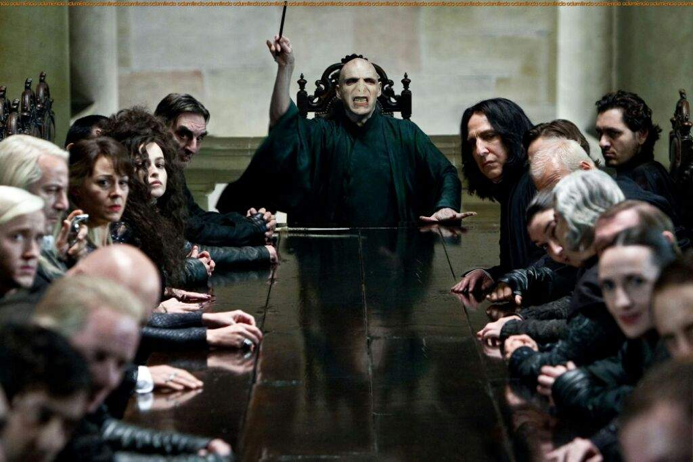

Harry Potter y las Reliquias de la Muerte 1ªParte
Harry, Ron y Hermionne se preparan para emprender la peligrosa misión de localizar y destruir los horrocrux en los que Voldemort tiene dividida su alma. Solos, los tres amigos deben confiar los unos en los otros más que nunca. Sin embargo entre ellos se interponen fuerzas oscuras que amenazan con separarlos. Mientras tanto, el mundo de la magia se ha convertido en un lugar peligroso para los enemigos del señor oscuro.
La tan temida guerra ha comenzado, y los mortífagos de Voldemort han tomado el control del Ministerio de Magia e incluso de Hogwarts, donde aterrorizan y arrestan a cualquiera que se oponga a ellos. Sin embargo, lo único que buscan es lo más valioso para Voldemort: a Harry Potter. El cuál se ha convertido en el elegido y los mortífagos lo buscan con órdenes precisas de llevarlo ante el Señor Tenebroso... vivo.
